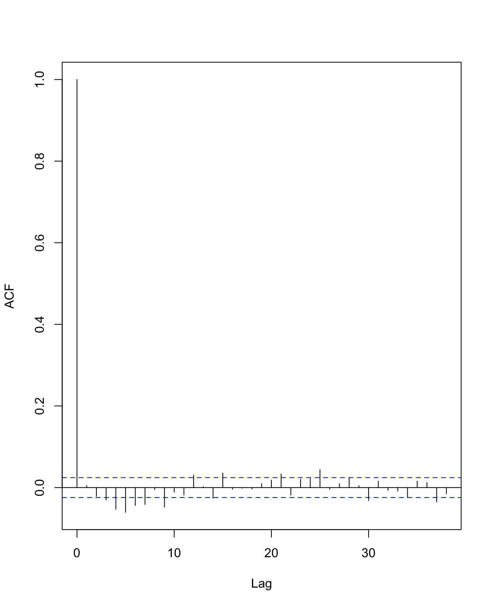
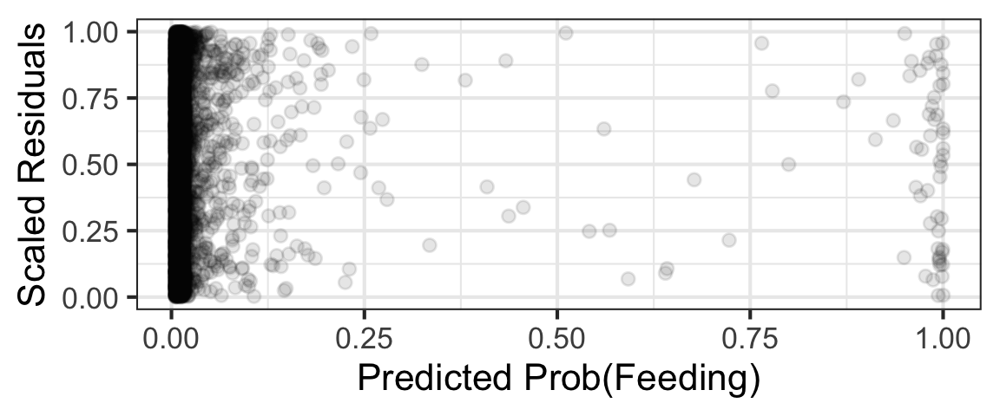
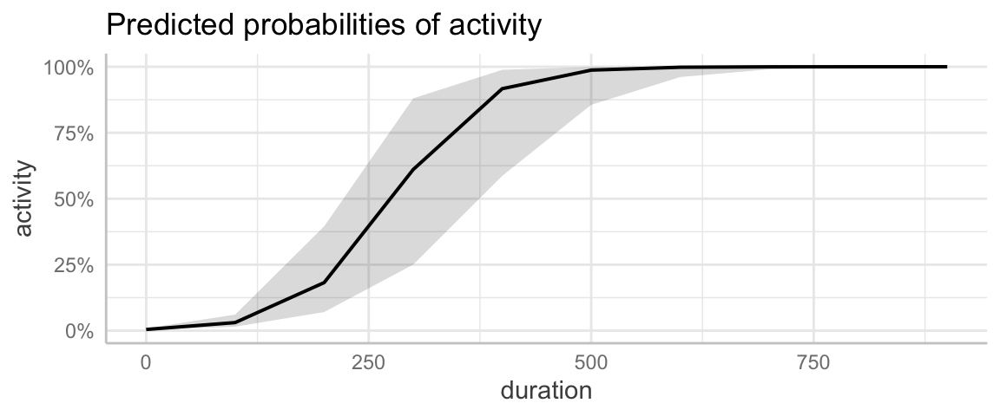
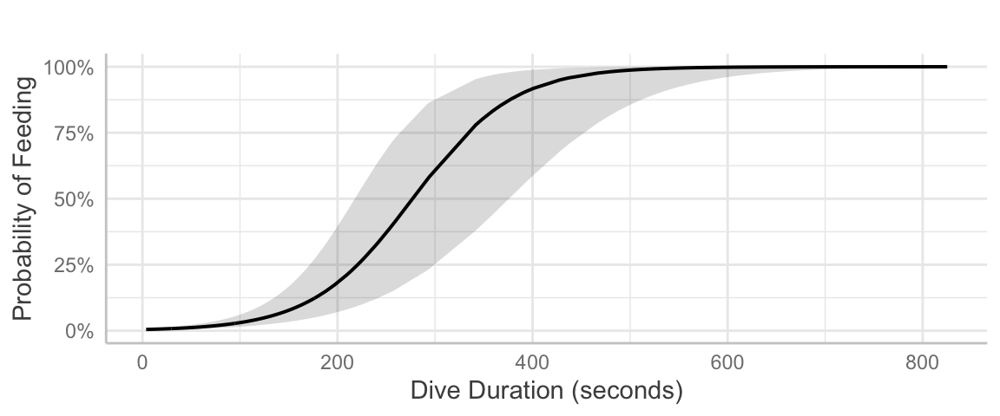
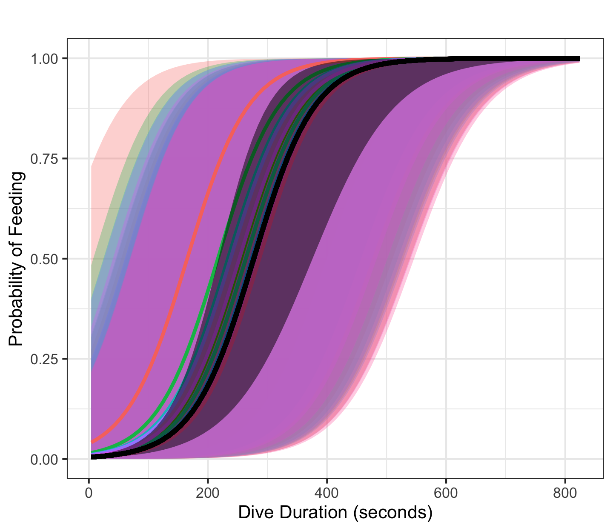
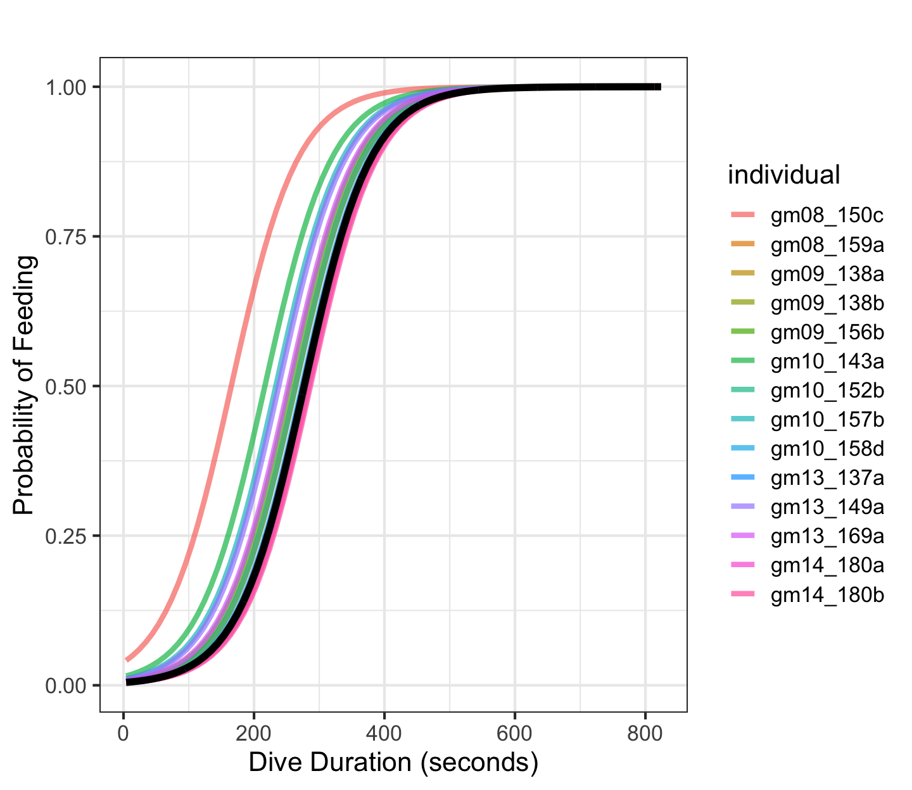
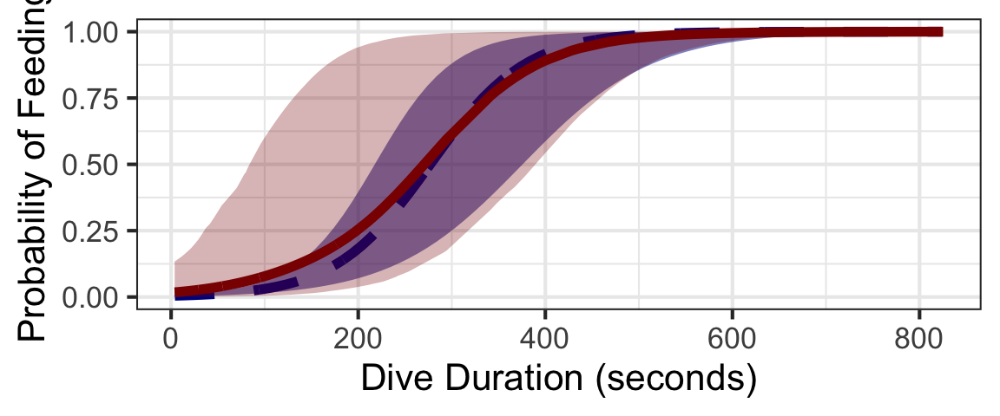

35 Hierarchical Models - Interpretation & Prediction
35.1 Section Learning Outcomes
This module, we continue to learn about hierarchical models. Now, we focus on additional practice at model planning and fitting as well as learning to interpret results (including use of prediction plots, which is more complicated for these models than for others we’ve seen).
By the end of the module you will:
- Do model selection for models with random effects, using information criteria or hypothesis tests (really, we did this last time - it’s the same as ever)
- Understand the difference between the individual average and the population average type predictions
- Make individual-average or population-average prediction plots for random effects models, with or without including random effects variance in the uncertainty estimates
- State an appropriate rationale for whether or not to include RE variance in uncertainty estimates for a particular case
- Interpret the results of a random effects model using the selection results and prediction plots mentioned above
35.2 Text Reference
Recommended reading for the materials covered in this tutorial can be found in:
- Beyond Multiple Linear Regression Chapters 8-11
- Course Notes Chapters 14-15
- Regression Modeling Strategies Chapter 7
- Ecological Models & Data in R Chapter 10
It’s suggested that you consider consulting these chapters after doing this tutorial, with particular focus on any topics you found most challenging.
35.3 Random effects with glmmTMB and standardized residuals
In the previous module we considered fitting and assessing mixed-effects models (using the package glmmTMB). We also touched on model selection for these models, which is just the same as for all the other models we’ve seen before (as long as we fit the model using maximum likelihood and not REML).
What about making predictions from the fitted model and interpreting the results, though? That’s what we consider this module!
35.4 Average RE Group vs Population Average
- Random effects models provide predictions for the average random effect grouping (here, the average whale and the average 2-hour timeblock).
- For a linear regression model (or any model with the identity link function, that is, no link function), the predicted values for the average RE group and population average are the same.
- But with a link function in the mix, it’s different.
Random Effect Equation
What model are we talking about in this example, and what’s it’s equation?
Average RE Group vs. Population Average
OK, so what’s the difference between “average random effect group” predictions and “population average” predictions?
Average-group predictions
The easy one first: How do we make predictions for the average RE group?
Population average predictions
Wow, that is kind of a lot. Let’s consider another worked example to try to better understand. This time, we’ll fit a model with a link function…
35.5 Data
Read in the data (you don’t need to interpret/understand the data preparation that is being done here):
pw <- read_csv('https://sldr.netlify.app/data/pwd.csv') |>
mutate(activity = ifelse(n_buzzes > 0,
'foraging',
'other'),
activity = forcats::fct_relevel(activity,
'other',
'foraging'))
pw <- pw |>
mutate(prev_buzzes = c(0, head(pull(pw, n_buzzes), -1)),
time_cat = cut_interval(time_of_day, length = 0.1))glimpse(pw)Rows: 6,452
Columns: 15
$ n_buzzes <dbl> 0, 0, 0, 0, 0, 0, 0, 0, 0, 0, 0, 0, 0, 0, 0, 0, 0, 0, 0, 0…
$ ODBA <dbl> 2.853267, 2.250012, 3.324172, 1.460979, 3.996195, 3.900074…
$ duration <dbl> 10.8, 11.8, 15.8, 11.8, 13.2, 33.8, 20.2, 167.8, 18.0, 22.…
$ depth <dbl> 1.831620, 2.370770, 3.467474, 2.424436, 2.772356, 3.987231…
$ exposure <dbl> 0, 0, 0, 0, 0, 0, 0, 0, 0, 0, 0, 0, 0, 0, 0, 0, 0, 0, 0, 0…
$ dive_state <chr> "Surf", "Surf", "Surf", "Surf", "Travel", "Travel", "Trave…
$ ind_size <chr> "Small", "Small", "Small", "Small", "Small", "Small", "Sma…
$ sound_level <dbl> 0, 0, 0, 0, 0, 0, 0, 0, 0, 0, 0, 0, 0, 0, 0, 0, 0, 0, 0, 0…
$ time_of_day <dbl> 15.27167, 15.27472, 15.27806, 15.28250, 15.28611, 15.28972…
$ group_size <dbl> 9, 9, 9, 9, 9, 9, 9, 9, 9, 9, 9, 9, 9, 9, 9, 9, 9, 9, 9, 9…
$ water_depth <dbl> 400, 400, 400, 400, 400, 400, 400, 400, 450, 450, 450, 450…
$ individual <chr> "gm08_150c", "gm08_150c", "gm08_150c", "gm08_150c", "gm08_…
$ activity <fct> other, other, other, other, other, other, other, other, ot…
$ prev_buzzes <dbl> 0, 0, 0, 0, 0, 0, 0, 0, 0, 0, 0, 0, 0, 0, 0, 0, 0, 0, 0, 0…
$ time_cat <fct> "(15.2,15.3]", "(15.2,15.3]", "(15.2,15.3]", "(15.2,15.3]"…Research Question
The research question we will consider is:
What characteristics of pilot whale dives help you to predict whether they are foraging (hunting for food) or doing something else?
We will use response variable activity.
The dataset, like the beaked whale one we saw earlier, was collected with animal-borne electronic tags.
The dataset has 6452 rows.
Each row is one dive by an individual whale, and there are dives from 14 whales in the dataset.
(So - comfortably similar to the beaked whale data you saw before in many ways…)
Possible predictors include:
ODBA(Overall Dynamic Body Acceleration - a measure of how much energy the animal is using to move and swim),- dive
durationin seconds, - dive
depthin meters, - sonar
exposure(noise nearby that might affect how whales behave), dive_state(behavior type, as judged by biologists watching whales when they are at the sea surface),- whale’s size (
ind_size), time_of_dayin decimal hours,time_cat(time as categorical variable, in one-hour blocks – do not use both time of day variables in same model!),group_size(number of other whales in same group),water_depthat the whale’s location,prev_buzzes(number of suspected feeding events in the previous dive),- and
individual(a unique identifier for each whale that was studied). - (Ignore
sound_levelandn_buzzes– do not use those variables in this exercise.)
35.6 Model Fitting
For this example, to save time, you will not plan the model yourself. But feel free to critique the plan you are given and decide if it makes sense to you!
We’ll consider this mixed-effects logistic regression model:
Considering the model given for the pilot whale dive data to answer the questions below.
individual as a fixed effect instead? We estimated one parameter (the random effect variance) to include it as a random effect. How many parameters would we have had to estimate to do it as a fixed effect?
About the number of parameters being estimated:
You can use graphs or tables to figure out how many values there are of each categorical variable and figure this out ‘by hand,’ but since the model has already been fitted, and easy way is to use the summary. There is one row in the coefficient table for each beta that was estimated (so 14 of those), and one variance term estimated for each random effect variable (so 2 more). In a logistic regression, there is no overdispersion parameter or residual variance being estimated, so that’s it: 14 + 2 = 16.”
About the number of parameters for a fixed vs a random effect: For categorical predictors, the ‘base’ level is included in the intercept, so if a categorical fixed-effect predictor variable has k possible values, we estimate (k-1) parameters to include it in the model.
Model Planning check-in
According to our previous rule of thumb, how many coefficients can we safely plan to estimate from this data set? To figure it out, create a table showing the number of “successes” and “failures” in the dataset.
We need a table (a “tally()”) of how often the variable activity takes on each value.
mosaic::tally(~activity, data = pw)We need a table (a “tally()”) of how often the variable activity takes on each value. Then we take the number of “successes” or “failures” – whichever is smaller – and divide it by 15 to get a rough idea of the upper limit on the number of parameters we can estimate well.
mosaic::tally(~activity, data = pw)
522/15Considering the m/15 rule of thumb…
If you have binary data, the rule of thumb say you’d use m/15 to determine your ‘dataset size’, with m being the number of successes or the number of failures (whichever is smaller).
Side note, m/15 and multiple-trials-per-row binary data: If you have multiple-trials-per-row binary data, I have honestly never seen an n/15 type rule being discussed. I believe the safest option is to compute total successes, total failures, and total rows of data and take the smallest of all three for m. BUT we don’t have multiple-trials-per-row data here.
In this case, We really should be fine in terms of dataset size.
BUT: When fitting random effects models, be conservative about the number of coefficients you’re including.
Fitting a random effect technically estimates just one parameter value, the random effect variance.
But many argue that it ‘uses up’ an amount of coefficient-fitting capacity that is somewhere between 1 (for the random effect variance) and the number of coefficients it would take to include that same predictor as a regular predictor (here, 13).”
35.7 Model Assessment
Model assessment for this model is just as it would be for any binary regression model; adding the random effects doesn’t really change things. But, for practice, let’s do it! Your job is to interpret the graphs.
Independence of residuals
acf(resid(pw_re), main = '') 
Mean-variance relationship and (logit) linearity
pw_sim <- simulateResiduals(pw_re)
gf_point(pw_sim$scaledResiduals ~
# if you are going to "plot your own" scaled residuals
# for a model with random effects, get fitted values
# EXCLUDING REs with input re.form = NA.
# If you wish you can also use rank(predict(...))
# try it to see the difference, it scales the x axis :)
# you can also use plotResiduals() too.
predict(pw_re, re.form = NA, type = 'response'),
alpha = 0.1) |>
gf_labs(x = 'Predicted Prob(Feeding)',
y = 'Scaled Residuals')
An alternative view of a scaled residual plot with rank() to scale the x axis (should yield same conclusion as it’s the same model and data!):
pw_sim <- simulateResiduals(pw_re)
gf_point(pw_sim$scaledResiduals ~
# this is with rank(predict(...))
# try it to see the difference, it scales the x axis :)
rank(predict(pw_re, re.form = NA, type = 'response')),
alpha = 0.1) |>
gf_labs(x = 'Predicted Prob(Feeding) (rank transformed)',
y = 'Scaled Residuals')
(logit) Linearity
In class we mentioned that for one-trial-per-row binary data, it’s a bit beyond the scope of our class to do the data prep needed to make a plot of the data to check logit linearity.
But for fun and for your consideration, code is given here that shows one example of checking linearity on a per-predictor basis:
(If you have time, modify the code given to try this for one more quantitative predictor).
35.8 Prediction Plots: Average RE Group
First, let’s try to make the predictions that are most natural and technically simple to make for a hierarchical model like this: ones for “the average individual” (in this case, or more generally, the “average RE group”.
These are equivalent to using the right-hand side of the model equation (ignoring both variance between random effect groups and residual variance) and applying the inverse logit transform to convert it to a probability.
Since we have two random effects, time period nested within individual, here we’ll be making predictions for the typical time-period of the typical individual whale.
Values of “other” predictors?
We have to choose one predictor to make the first predictions plots for; I’ll choose dive duration.
At what values were the “predictors not shown” fixed?
Remember: They are in the output above, under the heading “Adjusted for”.
The prediction plot
To get a graph rather than text output (now that we know the fixed values used to make the predictions), we just add |> plot() to the code.
ggpredict(pw_re,
terms = 'duration',
type = 'fixed') |>
plot()You are calculating adjusted predictions on the population-level (i.e.
`type = "fixed"`) for a *generalized* linear mixed model.
This may produce biased estimates due to Jensen's inequality. Consider
setting `bias_correction = TRUE` to correct for this bias.
See also the documentation of the `bias_correction` argument.Data were 'prettified'. Consider using `terms="duration [all]"` to get
smooth plots.
Smoother prediction plot
Taking ggeffects up on its offer to get a “smooth plot”:
ggpredict(pw_re,
terms = 'duration [all]',
type = 'fixed') |>
plot() |>
gf_labs(title = '',
y = 'Probability of Feeding',
x = 'Dive Duration (seconds)')
- If you chose, “When dive duration goes up, probability of feeding increases,” consider: This one is a bit too vague and makes it sound like the relationship is linear.
- If you chose, “As these predictions are made for fake data, no conclusions about the real world can be drawn,” consider: yes, we made predictions for a hypothetical situation, but the purpose of that was to visualize what the model (which was fitted to real data!) says about the relationships between variables. It should be a totally trustworthy view of what our model says (well, as long as the model is to be trusted, that is, if it was well planned and passed assessment)…
- One other answer was internally inconsistent: it gave a detailed description of the relationship between variables, but also then said maybe there was no relationship. That’s confusing! Based on model selection results (and maybe the prediction plot too), you judge whether there’s convincing evidence of an association. And if you conclude there’s not, don’t also describe the size and direction of the association the way you would if you did think it was real. Don’t ignore uncertainty in your conclusions, but also do draw firm conclusions when the results warrant it.
35.9 Prediction Plots: All the Whales
This isn’t something you need to be able to do on your own, but I think it may help with understanding the idea of the random effect, and also the “typical RE group”.
So just this once: I’ll show you how to make predictions for each of the whales in our dataset, and we’ll add them to our “average individual” prediction plot.
First, we make a hypothetical dataset where duration varies from 4 to 825 seconds (like in the real data), for each of our 14 whales. We’ll fix the other predictors at the same values as before.
ind_pred_data <- expand.grid(individual = pull(pw, individual) |> unique(),
duration = seq(from = 4, by = 10, to = 825),
ODBA = 2.05,
water_depth = 450.57,
prev_buzzes = 0.18,
dive_state = 'Travel',
time_cat = NA) #(population-level)Now, make predictions with SEs for this dataset, but including the random effect of individual. (R is able to estimate, for each individual, how far it is from the “average” individual; the standard deviation of these differences is the reported estimate of \(\sigma_{RE}\)! Umm, yeah…this is why it’s a bit disingenuous to say that we “only estimate one variance parameter” for every random effect predictor…)
ind_preds <- predict(pw_re,
type = 'link',
se.fit = TRUE,
newdata = ind_pred_data,
# to make specific-individual-level predictions rather than average-individual:
re.form = NULL
)Warning in checkTerms(data.tmb1$terms, data.tmb0$terms): Predicting new random effect levels for terms: 1 | time_cat:individual
Disable this warning with 'allow.new.levels=TRUE'ave_ind <- predict(pw_re,
type = 'link',
se.fit = TRUE,
newdata = ind_pred_data,
# to EXCLUDE individual random effects from predictions:
re.form = ~0)So far we made the predictions on the “link scale”, that is, in units of logit(p). To plot them on the probability scale, we need convert the predictions and SEs to CIs to the “response scale” – so, we need to inverse-logit transform the results to get them on the probability scale at the end.
ind_pred_data <- ind_pred_data |>
mutate(pred = ilogit(ind_preds$fit),
CI_bottom = ilogit(ind_preds$fit - 1.96*ind_preds$se.fit),
CI_top = ilogit(ind_preds$fit + 1.96*ind_preds$se.fit),
ave_ind_pred = ilogit(ave_ind$fit),
ave_CI_bottom = ilogit(ave_ind$fit - 1.96*ave_ind$se.fit),
ave_CI_top = ilogit(ave_ind$fit + 1.96*ave_ind$se.fit))Finally make the graph. Start with the previous ggeffects plot, and add on a new layer colored by whale. We omit the legend because we don’t really need to know which whale is which; but each color is one whale.
gf_ribbon(CI_bottom + CI_top ~ duration,
alpha = 0.3,
fill = ~individual,
data = ind_pred_data) |>
gf_line(pred ~ duration,
data = ind_pred_data,
color = ~individual,
size = 1.5) |>
gf_labs(title = '',
y = 'Probability of Feeding',
x = 'Dive Duration (seconds)') |>
gf_theme(legend.position = 'none') |>
gf_line(ave_ind_pred ~ duration,
size = 2, alpha = 1,
data = ind_pred_data,
color = 'black') |>
gf_ribbon(ave_CI_bottom + ave_CI_top ~ duration,
fill = 'black', alpha = 0.5)Warning: Using `size` aesthetic for lines was deprecated in ggplot2 3.4.0.
ℹ Please use `linewidth` instead.
ℹ The deprecated feature was likely used in the base package.
Please report the issue to the authors.
Hmm, kind of wild.
What if we plot again without uncertainty, just to see the lines more clearly?
Normally we’d never want to remove the CIs! But…Right now there are so many overlapping CIs it’s hard to see where the individual lines fall. We wouldn’t present this plot formally, but just to see where each whale’s average falls:
gf_line(pred ~ duration,
data = ind_pred_data,
color = ~individual,
size = 1.5,
alpha = 0.7) |>
gf_labs(title = '',
y = 'Probability of Feeding',
x = 'Dive Duration (seconds)') |>
# gf_theme(legend.position = 'none') |>
gf_line(ave_ind_pred ~ duration,
size = 2, alpha = 1,
data = ind_pred_data,
color = 'black') 
35.10 Prediction Plots: Population Average
So far, we have made predictions for the average or typical RE group.
But what if we wanted to make predictions for the average probability of feeding, across all whales in a population? (This is the kind of “average” that a model with no random effects would usually predict.)
Parametric Bootstrap Overview
One way is to use something called a parametric bootstrap.
Focus on the big picture – we want to get population average predictions to compare with the average individual ones, and there’s a bit of somewhat advanced stats and code to achieve it.
To do a “parametric bootstrap” means that we simulate many new hypothetical datasets from the fitted model.
To carry out each simulation, we:
- draw a proposed value for the intercept, all the slope coefficients, and the values of each random effect. (These will vary each simulation depending on the amount of uncertainty in the model and the variance \(\sigma_{RE}\).)
- Then we re-fit the model to the new fake data…
- and make predictions from that model.
We do steps 1-3 over and over to get a sense of the distribution of predicted values for every desired combination of predictor variable values.
Step 0: No NAs
Before you start, make sure there are no missing values in your data (to avoid a hard-to-understand-where-it-came-from bootMer() error).
pw <- pw |>
drop_na(
# in only the variables used in your model...
activity,
ODBA,
duration,
prev_buzzes,
dive_state,
individual,
time_cat
)Parametric Bootstrap: Prediction function
To make this work, we first have to create a function that takes a fitted model and makes the predictions we want from it. When you run the chunk below, it won’t seem to “do” anything, as what it’s doing is defining a function predict_pw_re() for later use.
predict_pw_re <- function(model){
new_dat <- ggeffects::data_grid(
model, # don't change to the name of "your" model! "model" is an INPUT to the function
terms = 'duration [all]',
# it's important (to pass input checks)
# that you fill in a value *seen in the data* for each RE
# but it does not matter which one it is - it's not actually used
condition = c(individual = "gm08_150c",
time_cat = "(15.2,15.3]"))
return(predict(model, # don't change!
newdata = new_dat,
re.form = NULL,
type = "response",
allow.new.levels = TRUE))
}Parametric Bootstrap: Run Simulations
The code below does the parametric bootstrap for you. But do not uncomment and run the commented lines - it will take at least half hour or so, so it’s been done for you (and then the result read in from online where I stored it).
# library(lme4)
# boot_pw_re <- bootMer(pw_re, # name of YOUR fitted model
# FUN = predict_pw_re, # our function defined above
# nsim = 100, # make this 1000+ if you have time/computer can handle
# type = "parametric", # parametric bootstrap
# use.u = FALSE)
boot_pw_re <- readRDS(gzcon(url('https://sldr.netlify.app/data/boot_pw_re.RDS', "rb")))The last input to bootMer(), use.u = FALSE, tells bootMer() to draw new normal random effect values (simulate new whales each time, not re-use the 14 actually observed in the original dataset).
Parametric Bootstrap: Mean and CI
We get a population average prediction by taking the mean of the simulated predictions, and a quantile-based CI can be estimated by taking their 2.5 and 97.5 percentiles.
pop_ave_data <- data_grid(pw_re,
terms = 'duration [all]')
pop_ave_data <- pop_ave_data |>
mutate(pop_ave_pred = apply(boot_pw_re$t, 2, mean),
CIlow = apply(boot_pw_re$t, 2, quantile, probs = 0.025),
CIhigh = apply(boot_pw_re$t, 2, quantile, probs = 0.975)
)Now, we just want to plot the results (and, since we’re trying to learn and understand how the different kinds of predictions compare for RE models, we want to compare the “average individual” predictions to the “population average” predictions, too).
gf_line(ave_ind_pred ~ duration,
size = 2,
data = ind_pred_data,
color = 'darkblue',
linetype = 'dashed') |>
gf_ribbon(ave_CI_bottom + ave_CI_top ~ duration,
data = ind_pred_data,
fill = 'darkblue',
alpha = 0.5,
inherit = FALSE) |>
gf_line(pop_ave_pred ~ duration,
size = 2,
data = pop_ave_data,
color = 'darkred',
inherit = FALSE) |>
gf_ribbon(CIlow + CIhigh ~ duration,
data = pop_ave_data,
fill = 'darkred',
inherit = FALSE) |>
gf_labs(y = 'Probability of Feeding',
x = 'Dive Duration (seconds)')
The population average prediction (solid red) has a somewhat different shape, and wider confidence bands compared to the blue dashed average-individual line (because it includes the individual-to-individual variation as well as uncertainty in the coefficient estimates).
Which one is “better”? It depends.
Do you think it makes more sense to show how one whale’s probability of feeding would be expected to vary over a range of depths?
Or do we want to show the feeding probability – depth relationship that we’d get if we sampled bunches of dives from many whales, at many depths?
There’s no clear-cut answer. Different researchers will think differently for a given scenario, and the best practice will vary by discipline and from problem to problem. So you really do need to think through which one you think shows what you really want to show (as for almost all visualization)!